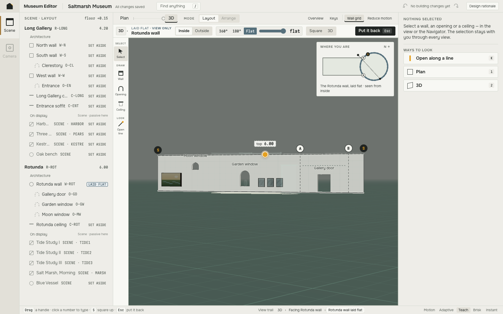
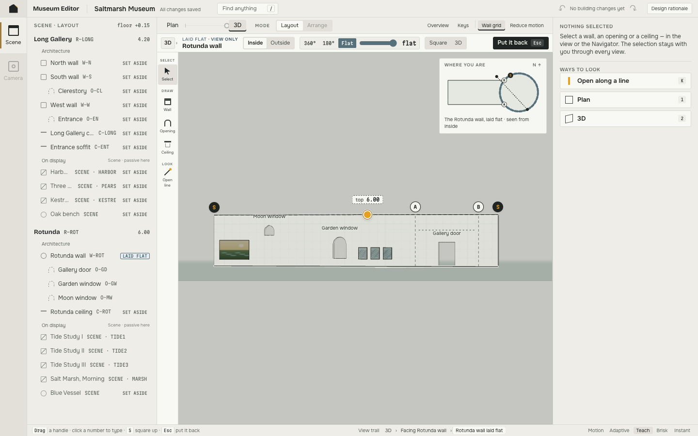
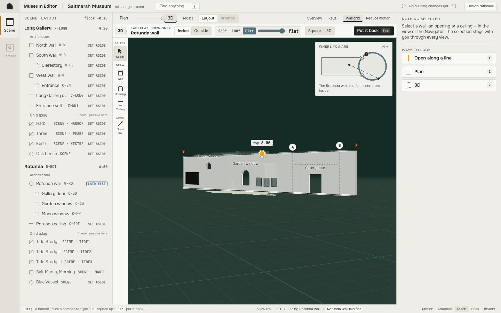
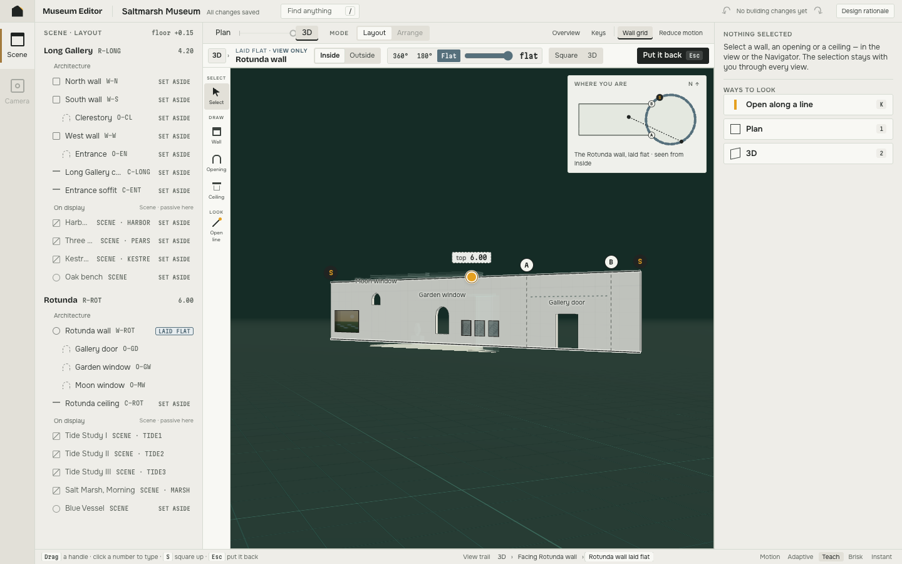
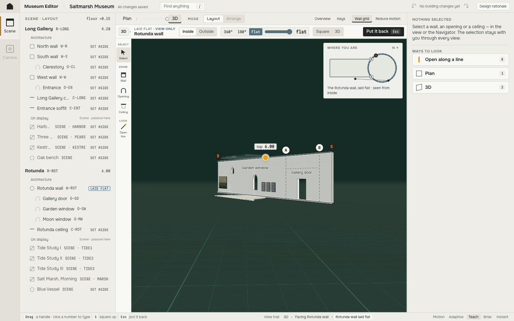
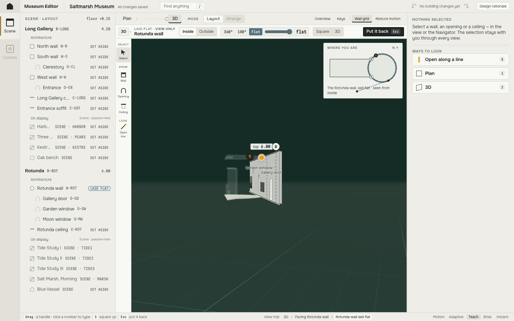

Same camera path, same angular rate (~55°/s), same four wall-clock moments, full UI. Every still is a frame that build produced at that timestamp; the pose and the paper value are replayed from a live recording of the same move. before = the committed build, after = the rate-limited paper value. Watch how quickly the ground leaves the page in the before column, and what it passes through on the way.





